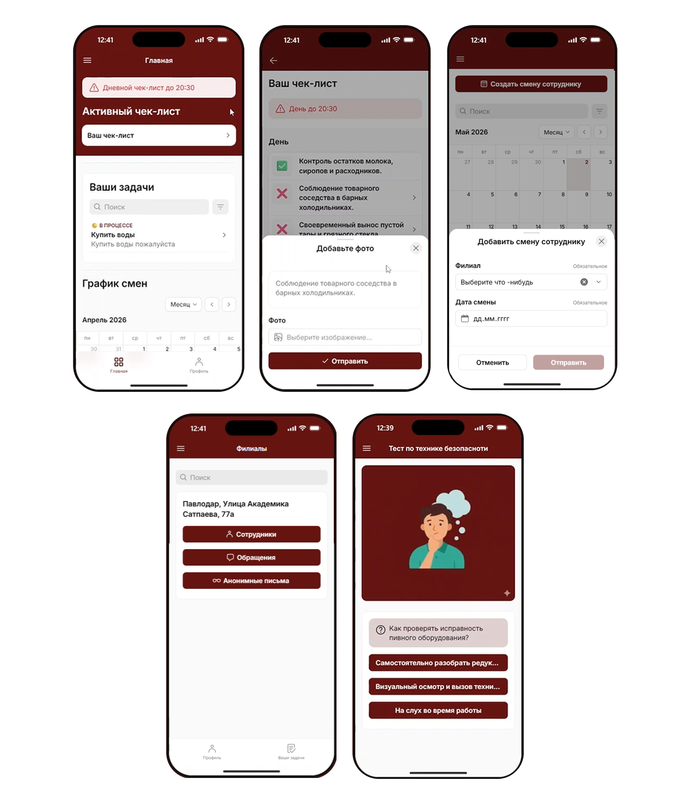
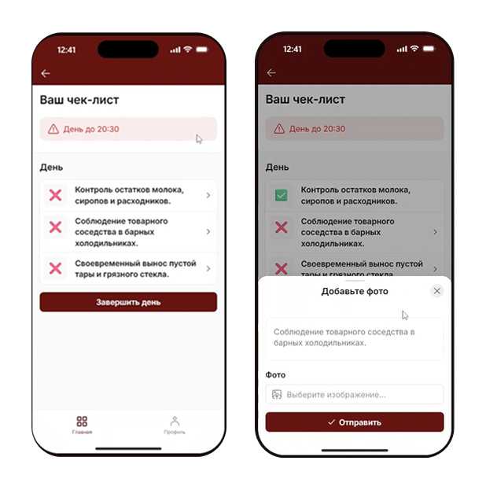
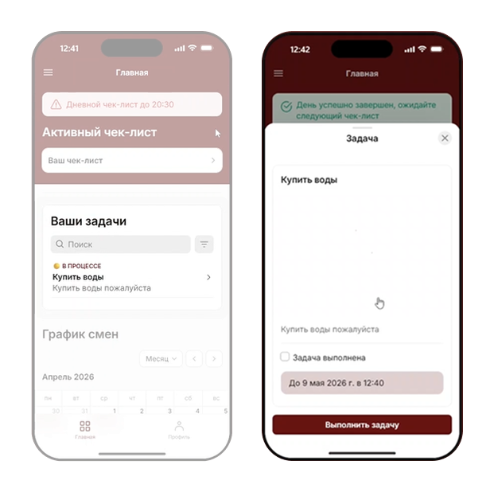
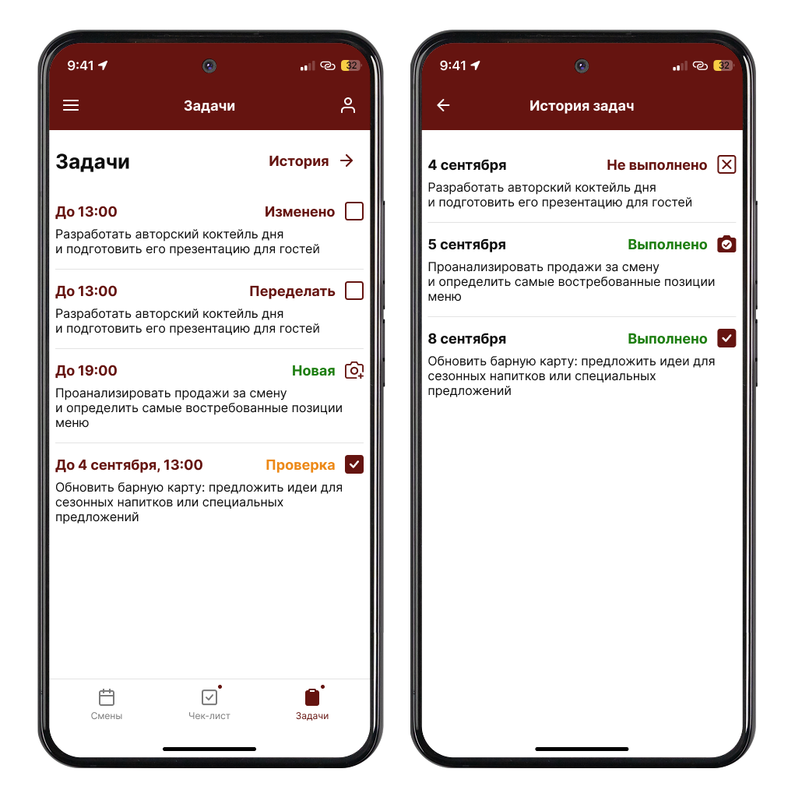
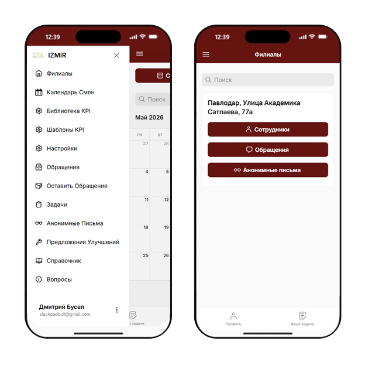
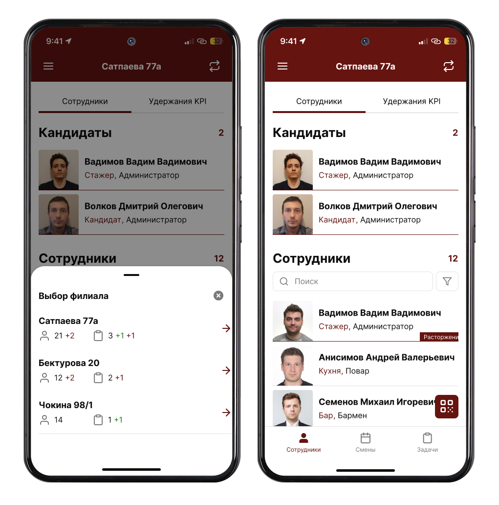
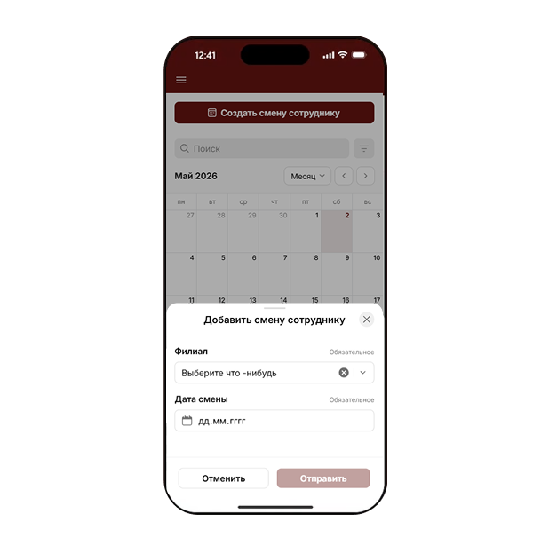
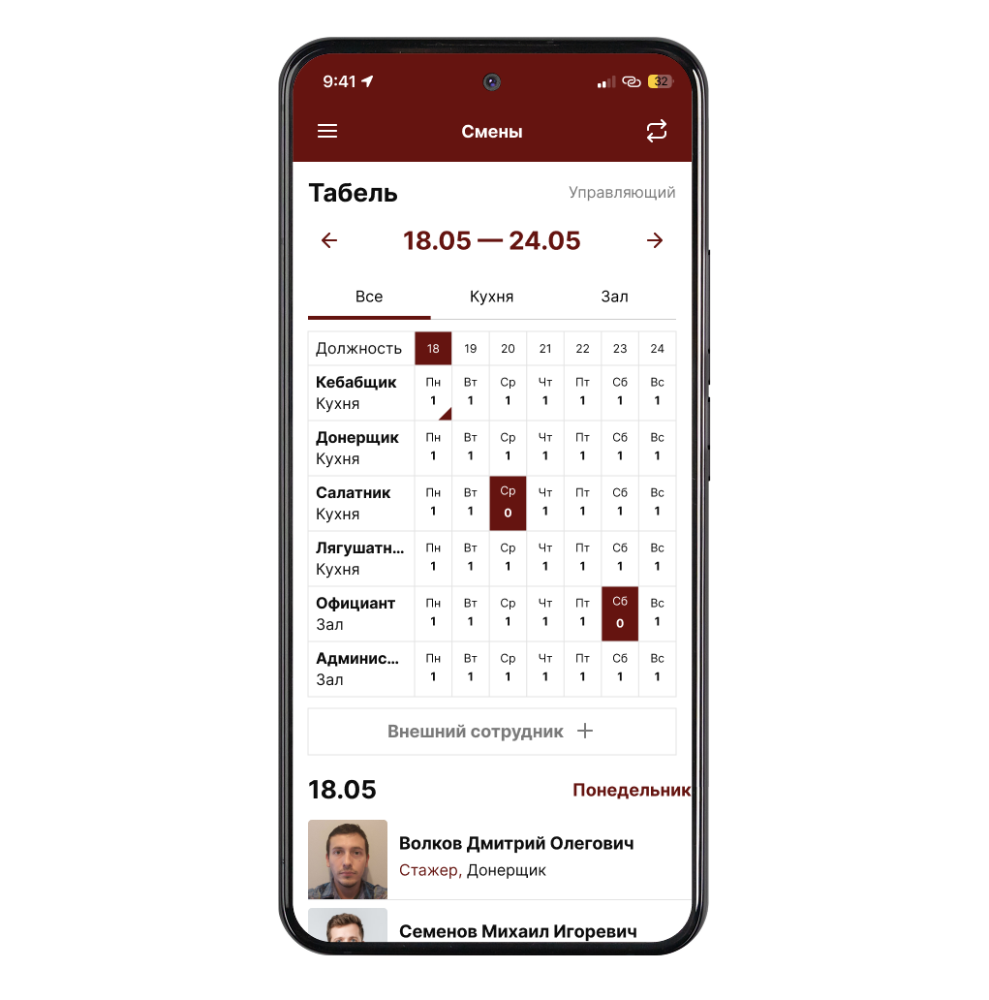
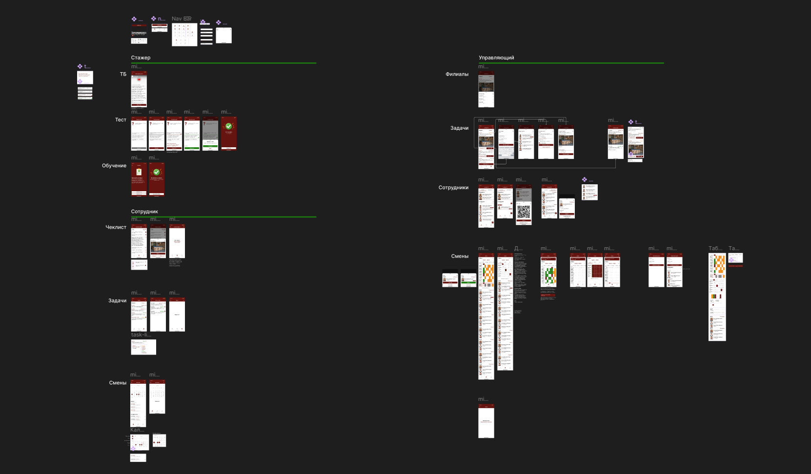

Редизайн корпоративной системы
«Измир» — сеть ресторанов и точек быстрого питания в Казахстане. Компания разрабатывала внутреннюю систему, которая должна была объединить работу сотрудников, управляющих, кадрового отдела, бухгалтерии и директора в единой экосистеме.
Проект создавался на базе конструктора Glide. Это позволило быстро собрать первый рабочий прототип и начать тестирование ещё до завершения разработки серверной части.
Во время тестирования выяснилось, что приложение не помогает сотрудникам работать быстрее. Интерфейс требовал большого количества действий, важные функции были скрыты за дополнительной навигацией, а некоторые сценарии противоречили тому, как сотрудники выполняют работу в реальности.
Меня пригласили провести UX-аудит существующего решения, разобраться в причинах этих проблем и перепроектировать наиболее частые сценарии использования, не увеличивая сроки разработки и сохранив ограничения выбранной платформы.

Интерфейс до редизайна
Исследование
Начал с интервью сотрудников и анализа уже разработанного интерфейса.
Выяснил, что сотрудники тратят на интерфейс больше времени, чем на работу, и проблема заключалась не только в ограничениях конструктора «Glide»: значительную часть неудобств создавали сами сценарии взаимодействия.
Интерфейс был построен вокруг структуры данных системы, а не ежедневной работы сотрудников.
Принципы редизайна
Главной целью проекта было увеличить эффективность взаимодействия с интерфейсом, не увеличивая сроки разработки.
Для сокращения сроков я старался максимально переиспользовать компоненты и стилистику из глайда.
Для увеличения эффективности придерживался принципа: «Лучший интерфейс — тот, которого нет» — сокращал количество действий, показывал только ту информацию, которая нужна в текущий момент, и выносил основные функции на первый экран без дополнительных переходов.
Трудоустройство
После просмотра материалов по технике безопасности сотрудник проходил обязательное тестирование. В предыдущей версии приложения любая ошибка означала повторное прохождение всего теста.
Я изменил логику прохождения. После каждого ответа сотрудник сразу видел правильный результат, а вопросы с ошибками автоматически переносились в конец очереди. В результате тест превращался не в экзамен, а в обучение: сотрудник продолжал отвечать на вопросы до тех пор, пока не даст правильный ответ на каждый из них.
После успешного завершения тестирования сотруднику автоматически становился доступен основной интерфейс системы.
Чек-лист сотрудника
Главный инструмент приложения — на его основе рассчитывалась дополнительная мотивация сотрудников.
В предыдущей версии большая часть информации была скрыта. Чтобы отметить выполнение одной задачи, сотруднику приходилось открыть карточку, поставить отметку, подтвердить действие и только после этого вернуться обратно.

Интерфейс до редизайна
Я полностью переработал этот сценари. Отобразил оставшееся время до окончания чек-листа, чтобы сотруднику не приходилось рассчитывать его самостоятельно.
Задачи теперь отмечаются одним нажатием прямо в списке. Если для выполнения требуется фотография, вместо чекбокса отображается кнопка загрузки изображения. После выбора фотографии задача автоматически считается выполненной, а при необходимости снимок можно заменить.
Также исчезло отдельное завершение чек-листа. Если все задачи выполнены вовремя, этап закрывается автоматически. В результате выполнение чек-листа перестало требовать постоянных переходов между экранами.
Задачи
В предыдущей версии сроки выполнения были скрыты внутри карточек, а завершённые и активные задачи отображались одним списком.

Интерфейс до редизайна
Я вынес дедлайны в общий список, добавил статусы «Переделать» и «Изменено», чтобы сотрудник понимал причину повторного открытия задачи, а завершённые, отменённые и невыполненные задачи перенёс в отдельную историю.
Рабочая область стала содержать только актуальные задачи, требующие внимания в настоящий момент.

Интерфейс управляющего
Делится на две роли: управляющего — руководителя нескольких филиалов, и подуправляющего — начальника отдела, например кухни или бара.
В предыдущей версии навигация была построена вокруг отдельных разделов приложения. Для выполнения большинства задач приходилось постоянно переключаться между экранами.

Я перестроил интерфейс вокруг филиала. После выбора филиала управляющий сразу попадает в его рабочую область и получает доступ ко всем основным сценариям.
На экране выбора филиала отображается краткая сводка по каждому объекту: количество сотрудников, кандидатов на трудоустройство и статус выполнения задач. Это позволяет быстро оценить ситуацию ещё до открытия филиала.
Внутри филиала работа разделена на три основных направления: сотрудники, задачи и смены.

Планирование смен
Ранее смены назначались отдельно каждому сотруднику через последовательность одинаковых действий. Такой сценарий плохо масштабировался и занимал много времени.

Интерфейс до редизайна
Я заменил его недельным табелем с разным интерфейсом для управляющего и подуправляющего.
Подуправляющий занимается формированием плана смен на неделю в своём отделе, после чего в течение недели по итогам посещения формируется фактический табель. В начале рабочего дня во всех запланированных сменах отмечается, что сотрудник пришёл, но если сотрудник не был на работе, ответственный отмечает его отсутствующим и может сразу назначить замену другому сотруднику, в том числе из другого филиала. При этом система автоматически исключает возможность назначить одного сотрудника одновременно в двух местах.
Управляющий не занимается назначением смен, ему важно что бы персонал на смену был укомплектован. Если на определённую должность никто не назначен, смена сразу выделяется красным цветом. Если сотрудник отсутствует, но смена остаётся укомплектованной, смена отмечается красным уголком.

Так управляющий контролирует ситуацию, не просматривая расписание каждого сотрудника отдельно.
Итог
Помимо основных сценариев я провёл аудит интерфейсов директора, бухгалтера и кадрового отдела. Для этих ролей были подготовлены рекомендации по улучшению навигации, структуры экранов и сценариев работы без изменения общей архитектуры системы.
В результате были перепроектированы самые частые сценарии работы сотрудников и управляющих без изменения выбранной платформы и без существенного влияния на сроки разработки.
Главной задачей проекта было не создание нового продукта, а устранение препятствий, которые мешали сотрудникам работать эффективно. Все изменения были направлены на сокращение количества действий, повышение информативности интерфейса и приведение сценариев в соответствие с реальными рабочими процессами пользователей.
